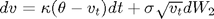
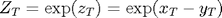

cf2pdf
Compute normalized probability density function from characteristic function. Part of the CFH Toolbox.
Syntax
[F X] = CF2PDF(CF) [F X] = CF2PDF(CF,AUX)
Given a discounted characteristic function CF, returns normalized probability density function F and corresponding sampling points X.
Input Arguments
The characteristic function CF should expect the real argument u and return the corresponding discounted characteristic function.
AUX is a structure containing optional parameters for the FFT:
- aux.N is the number of points for FRFT evaluation, default 8192
- aux.uMax denotes the upper limit of integration of the characteristic function, default 200
- aux.dx describes discretization of the log strike range, default value 3/N
- aux.x0 is the log of spot underlying, default zero
- aux.x is a vector of pdf sampling points. If this field is used, the values in dx, x0 and N are replaced with corresponding values obtained from x.
Contents
Example 1: Black Scholes
In the Black Scholes model, the dynamics of the logarithmic spot process are:
resulting in the characteristic function
where .
The characteristic function of the Black Scholes model is also included in cflib, using the argument type='BS'.
rf = 0.05; tau = 1; sigma = 0.25; S0 = 1; x0 = log(S0); cfB= @(u) exp(-rf*tau + u*i*x0 + i*u*(rf-1/2*sigma^2)*tau - 1/2*u.^2*sigma^2*tau); [fB xB] = cf2pdf(cfB); plot(xB,fB)
Example 2: Heston's Stochastic volatility model with Merton style jumps
In this framework, the process dynamics are:

and  is a Poisson jump process with constant intensity .
is a Poisson jump process with constant intensity .
The drift adjustment is , where the jump distribution is normal
The corresponding characteristic function is part of the cflib toolbox:
par.rf = 0.05; par.q = 0; par.kappa = 0.85; par.theta = 0.25^2; par.sigma = 0.10; par.rho = -0.8; par.lambda = 0.1; par.muJ = -0.20; par.sigmaJ = 0.10; par.x0 = 0; par.v0 = 0.25^2; tau = 1; cfH = @(u) cflib(u,tau,par,'HestonJump'); [fH xH] = cf2pdf(cfH); plot(xH,fH,xB,fB); legend('Heston','Black Scholes');
Example 3: Probability density of relative asset price
In this example, we will discuss the probability density function of the relative performance of asset over asset , whose log dynamics are assumed to be:
and constant jump intensity , whereas jumps in and are bivariate normal:
The jump transform is
resulting in the drift adjustments
We are interested in the pdf, and hence the characteristic function, of of . Noting that , we can rewrite the characteristic function of as:
This feat can be easily implemented via cfaffine. Let us assume correlated jumps of opposing sizes:
X0 = 100; Y0 = 110; rf = 0.05; sigmaX = 0.20; sigmaY = 0.25; muJ = [-0.25 ; 0.15]; SigmaJ = [0.2*0.2 0.2*0.1*0.7 ; 0.2*0.1*0.7 0.1*0.1]; lambda = 0.15; jump = @(c) exp(muJ'*c + 1/2*diag(SigmaJ)'*c.^2 + SigmaJ(1,2)*c(1,:).*c(2,:));
Translating these into the AJD coefficients:
x0 = log([X0 ; Y0]); z0 = x0(1)-x0(2); m(1,:) = jump([1;0])-1; m(2,:) = jump([0;1])-1; K0 = rf-1/2*[sigmaX^2;sigmaY^2]-lambda*(m); H0 = [sigmaX^2 0 ; 0 sigmaY^2]; L0 = lambda; R0 = rf;
We will now define the characteristic function via cfaffine, which allows for an array of u values. Foreknowing that the function cf2pdf will evaluate the supplied characteristic functions at the column vector u=[0;...;uMax], we tell cfaffine that the input will be a NU x NX matrix by setting the ND argument to 2:
cf = @(u) cfaffine(u*[1 -1],x0,tau,K0,[],H0,[],R0,[],L0,[],jump,2);
We will also compare the result to the case where no jumps are present:
K0Diffusive = rf-1/2*[sigmaX^2;sigmaY^2]; cfDiffuse = @(u) cfaffine(u*[1 -1],x0,tau,K0Diffusive,[],H0,[],R0,[],[],[],[],2);
The initial value for cf2pdf is log(Z0), thus
aux.x0 = z0; [f x] = cf2pdf(cf,aux); [fD xD] = cf2pdf(cfDiffuse,aux); plot(x,f,xD,fD); title('Probability distribution of relative asset price, with and without jumps'); legend('pdf with jumps','pdf without jumps'); xlabel('log price ratio'); ylabel('normalized pdf'); xlim(1.5*[-1 1]);